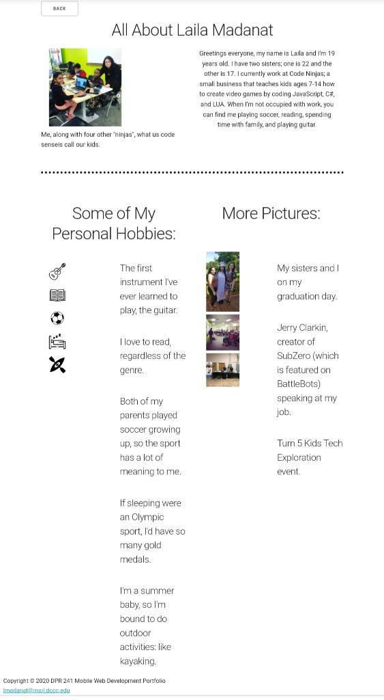

Git Repo
A mobile snapshot of my Git Repo
Media Queries
Media Queries are useful when you want to modify your site or app, check the width and height of the device, and the resolution.
Resumé

I would say that the Skeleton framework is best for programmers who are relatively new to the field. It's called, "dead simple" for a reason. Another pro would be it has superior main types and web layouts. Limited templates, and lack of CSS richness are some drawbacks for Skeleton. Compared to the Media Queries, I found Skeleton to be easier.